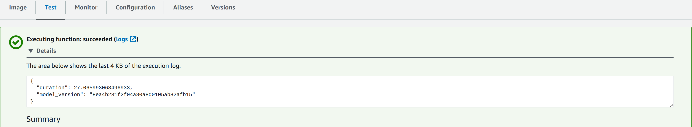
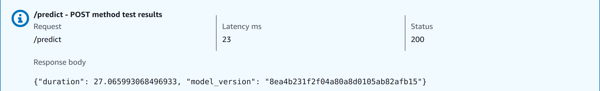

Tech Blog: Deploying an AWS Lambda function in Python for a machine learning model
Posted by Abhishek R. S. on 2024-07-04
The blog is about...
Creating a serverless deployment using AWS Lamdba function in Python for serving a machine learning model. The project can be
found in the following Github repo
ML_NY_TAXI/aws_lambda_func .
1.1) Creating a lambda function script in Python
A lambda function can be created in Python very easily. Refer to the project repo.
A function named lambda_handler which takes an event as the argument returns a prediction inside a dict.
To test the lambda function locally, run the script named test_lambda_func.py. Once the sanity check for the
working of the lambda function script is performed, it is ready to be containerized with docker.
1.2) IAM setup
Although, this is out of the scope of this blogpost, it is a standard practice to setup IAM users, groups and roles.
Create an AWS user if not present already. Create a group for AWS Lambda users, API Gateway admin, ECR users.
Add user to these groups. Add policy to these groups by giving full access to relevant things.
Create a role for lambda with full access to lambda.
1.3) Creating a docker image for the lambda function and testing it locally
A list of publicly available docker images for AWS can be found in
Amazon Elastic Container Registry (ECR) public gallery.
One can search for "lambda python" and find a docker image for appropriate python version under Image tags.
This image can be used as a base docker image to build a custom docker image for a lambda function.
Unlike a typical Dockerfile, there will be certain changes.
-
There is no need to set working directory using WORKDIR /app
that is usually done in case of dockerizing a Flask / FastAPI application.
-
There is no need to expose a port for docekrizing the lambda function,
that is usually done in case of dockerizing a Flask / FastAPI application.
-
The final CMD to run an application inside the container will just be the
lambda_function_script:lambda_function_handler
To build the docker container, use the following command,
docker build -t aws-lambda-ny-taxi .
To test the docker container locally, run the following command,
docker run -it --rm -p 8080:8080 aws-lambda-ny-taxi:latest
followed by the test script named test_lambda_func_local.py
1.4) Creating a repo for docker container on AWS ECR
Create a private repo for the docker container using the following steps.
ECR -> Create repo -> Select private -> Choose a name for the repo -> Create repo
Once the repo is created, go to the repo on AWS, see View Push Commands. Run all the commands in the terminal.
1.5) Setting up the Lambda function on AWS
The AWS Lambda function needs to be set up. This can be done using the following steps.
Lambda -> Create function -> Select from container image -> Choose a name for the lambda function ->
Choose the container image with browse images -> Choose x86_64 -> Choose existing role and select appropriate role -> Create
One can easily test the lambda function using the test option. Copy paste the json input and then test.
Doing this directly will result in a failure since it will timeout (default timeout is 3 sec.).
Set a higher timeout like 30 sec. (for initial loading) and a slightly higher memory in Configuration -> General -> Timeout.
After applying the above changes and test it, things will work. The first time will take a longer time to run (like > 20 sec.) and
the subsequent runs will be much faster (in milli sec.). The following image shows the successful test of the lambda function.

1.6) Exposing the AWS Lambda function using AWS API Gateway
A Rest API needs to be created for exposing the Lambda function. This can be done using the following steps.
API Gateway -> Rest API -> Choose a name for the API -> Create API
Once the API is created, a resource needs to be created. This can be done by create resource and choose the name of the resource (/predict).
Create a method to invoke the resource using the following steps.
Create method -> Select method type (POST) -> Choose as Lambda function -> Select the appropriate lambda function -> Create method
The API can be tested using Test. Copy paste the json to the request body and test. The first time will take a longer time to run (>2 sec.).
The subsequent runs will take much less time (in milli sec.). The following image shows the successful test
of the deployed API using the AWS API gateway.

After all these steps, one can deploy the API using Deploy API -> select new stage -> choose a stage name (test)
Use the invoke URL in test_lambda_func_aws.py script to acutally send POST request to the API deployed on AWS.
1.7) Challenges faced
-
I forgot to remove the WORKDIR /app from the Dockerfile for the lambda function and got some errors
that the script lambda_function.py was not found. I figured it out later and removed WORKDIR /app.
This is because of the fact that AWS is providing the base docker image and they would have built it with their own config.
-
Another mistake that I made was that number of arguments for any lambda function lambda_handler() is two and
it will require event and context as arguments. I initially used only one as I was still learning and experimenting. I got
some error regarding mismatch in the number of function args. After fixing this, things worked smoothly.
Main takeaway
-
I learned to create a lambda function in Python for deploying a machine learning model to AWS Lambda.
-
I learned to create a repo in ECR and push a docker container image to the ECR.
-
I learned to create an AWS Lambda function from the container image and test it.
-
I learned to create a Rest API for the deployed lambda function using the AWS API Gateway.
I learned a lot of new things in this project. To deploying more complex ML models using AWS Lambda in the future 😄.
Next Steps
|